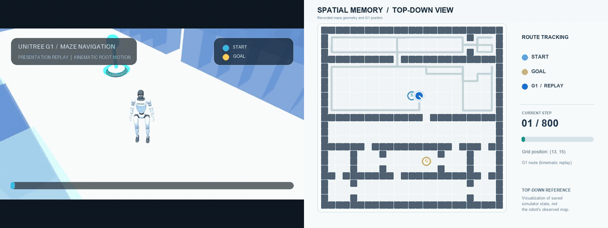
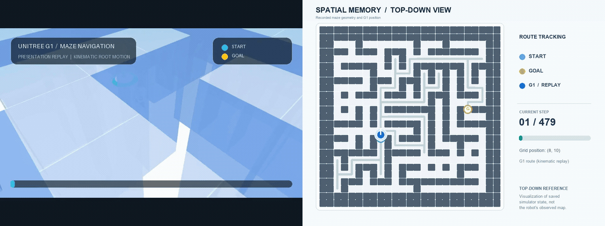

Humanoid Spatial Memory
3D Perception and Navigation in Changing Indoor Environments
Abstract
How should a humanoid robot update spatial memory and navigate around changing indoor obstacles without unnecessary contact? I developed a Unitree G1 MuJoCo simulation with 3D ray sensing, 2D occupancy memory, four observation policies (Static, Periodic, Age, and Uncertainty), A* planning, and selected-action collision checks. In 288 matched 80-step episodes on 36 saved development environments, an initially overconservative turn-clearance approximation reduced goal completion to 21/288 (7.3%); correcting the selected-turn logic recovered 225/288 (78.1%). After conservative lateral avoidance and independent 61-ray emergency sensing, the 288-episode evaluation retained 225 goal completions with zero unwanted contacts. To separate time-limit failures from persistent route failures, I replayed the 63 initially unsuccessful episodes with a 400-step horizon: 60/63 reached the goal contact-free (mean goal step 151.73). Raising the limit to 800 rescued one of the remaining three at step 479, while two Static-policy episodes still failed when the planner reported no feasible forward route. These are development-set results using kinematic root navigation and non-reactive capsule pedestrian proxies, not demonstrated physical bipedal walking or real-world safety.
36 saved development environments (12 each of Room Graph, Rectangular Partition, and Maze) · Two schedules per world · Four observation policies · Seed 42 · Initial 80-step benchmark, followed by 400- and 800-step continuations of unsuccessful episodes · Maximum 20 spatial-memory observations · Assumed 0.75 m/grid cell

An earlier, separate overhead route animation is also available.

01 / Research Question
When is a remembered map worth checking again?
A corridor that was clear yesterday may be blocked by furniture today. A passing person, however, should not necessarily be recorded as a permanent wall. Re-observing everything continuously is expensive, but trusting an old map can lead to failed routes. This project studies how different observation schedules balance navigation success, sensing cost, and map freshness in changing indoor spaces.
Rather than claiming a new memory algorithm, I first evaluated established scheduling approaches in a shared, reproducible simulation. The same underlying robot model, sensor, planner, environment instances, and observation cap were used for all four policies.
02 / System
From MuJoCo rays to collision-checked actions
- 1. Partial 3D sensingA torso-mounted horizontal ray scanner detects visible surfaces with 61 rays, a 120° field of view, and a 6 m range. Hidden cells remain unknown.
- 2. Spatial memoryMeasurements are projected onto a 2D grid: unknown, free, or occupied. The memory controller decides when another observation is taken.
- 3. Footprint-aware routingA* (pronounced A-star), a shortest-path search algorithm, searches position-and-heading states using remembered obstacles and the public dimensions of G1. Rejected actions are tracked separately from occupancy memory.
- 4. MuJoCo collision checksOnly the chosen movement is checked against 3D geometry before execution. Rotation and translation can be rejected without granting the planner a hidden map.
Walls, changing objects, and moving capsule-shaped pedestrian proxies exist in the MuJoCo scene. These simplified geometric proxies represent moving obstacles, not animated human figures. The agent receives measured occupancy, not simulator obstacle labels or future proxy trajectories. The proxies follow predefined motion and do not react to G1.

03 / Experimental Design
Four policies, matched conditions
All four policies use the same G1 model, sensor, occupancy memory and navigation planner. They differ in one decision: when to request a new spatial-memory observation.
What counts as an observation?
An observation is one authorized scan by a torso-mounted MuJoCo ray sensor. From the robot's current heading, it casts 61 horizontal rays across a 120° forward field of view (±60°), up to 6 m (about eight 0.75 m grid cells). The rays sample free space up to the first measured surface: walls, obstacles or pedestrians block the view behind them. This is a single horizontal scanning plane, not a depth camera or a full 3D point cloud.
Each observation produces a 2D occupancy grid: 0 means observed free, 1 means observed occupied, and -1 means unknown or unobserved. Only measured cells replace their previous memory values; cells hidden behind obstacles retain whatever the robot previously remembered. An observation is not a full map refresh.
0 Free
1 Occupied
-1 Unknown
What does the robot already know?
The experiment assumes accurate self-localization; localization is not learned from the observation rays. The start and goal coordinates are provided, and the simulation maintains G1's current grid position and heading as it moves and turns.
| Information | Known? | Source |
|---|---|---|
| Start coordinates | Yes | Provided at episode initialization |
| Goal coordinates | Yes | Provided as the navigation target |
| Current position (x, y) | Yes | Simulation-maintained robot pose; no localization error is modeled |
| Current heading (yaw) | Yes | Initial heading and executed robot turns |
| Nearby walls and obstacles | Partially | Authorized forward-ray observations and retained occupancy memory |
| Space behind occlusions | Not directly | Only any previously observed information is remembered |
| Future pedestrian motion | No | Future schedules and simulator ground truth are withheld from the agent |
Navigation also receives feedback when a selected movement is rejected by MuJoCo collision checks; rejected actions are tracked separately from the occupancy map. It does not receive collision checks for every possible unselected action.
How the four observation policies work
| Policy | When another memory observation is requested |
|---|---|
| Static | Never after the mandatory observation at step 0. |
| Periodic | Every four steps: 0, 4, 8, 12, 16, …, until the budget is exhausted. |
| Age | When at least 50% of the previously observed cells within a 3-cell radius of the current position were last observed 4 or more steps ago. |
| Uncertainty | When the mean binary entropy ≥ 0.75 bits for previously observed cells within the same 3-cell radius. Entropy is estimated from time since observation and observed occupancy flips; never-seen cells are excluded from this score. |
Static
Observe only at the beginning.
Periodic
Refresh every four steps.
Age
Scan when enough nearby known cells are stale.
Uncertainty
Scan when mean nearby known-cell entropy is high.
Blue timeline cells represent observations, gray cells no observation. The Age and Uncertainty diagrams are illustrative examples of trigger calculations, not recorded rollout data. For both adaptive policies, the decision region is a 3-cell-radius circle around G1, while the actual sensor still looks only 120° forward. Neither adaptive trigger directly considers the goal or planned route. All policies begin with an observation at step 0; the 20-call budget includes that initial scan.
Important distinction: the independent Emergency Safety Sensor is different from a scheduled memory observation. It scans 360° within 2 m using 61 rays every simulation step to protect selected actions, but it does not update the spatial occupancy memory. Even Static still receives this near-field safety scan; the reported memory-observation counts exclude it.
Method definitions: observation scheduling code · MuJoCo ray sensor · frozen Phase 2 evaluation.
I prepared and reused 36 saved development environments, with 12 from each of three floor-plan families: R (Room Graph), containing rooms connected by narrow doors; BP (B-prime Rectangular Partition), containing rectangular rooms connected by selected doorways; and M (Maze), containing narrow, winding corridors. All layouts are based on saved 25 × 25 grids, not newly generated scenes for these comparisons.
The 36 development environments
The following diagrams show the actual saved wall layouts from above. Cyan marks each start position, and gold marks the goal. Select a diagram to view its full-size version. On narrow screens, swipe horizontally to examine individual layouts.


The diagrams show fixed maze geometry and start/goal locations. Moving pedestrian trajectories and the two schedules of obstacle changes are not shown. See all 36 mazes in one image or view their saved identities and coordinates.
How are obstacles and pedestrian proxies placed?
The 25 × 25 base geometry is generated using constrained, seeded procedures rather than arbitrary obstacle placement. For each saved world, two separately seeded dynamic schedules are generated. Each schedule draws exactly one of five categories with an equal 20% selection probability; the actual small dataset is not forced to contain exactly 20% of each type. The same saved worlds and schedules are reused across all four observation policies.
No change
No additional object or pedestrian.
The environment remains unchanged.
Addition
2–4 occupied cells appear at step 2–12.
Previously free cells become blocked.
Removal
2–4 initially occupied cells disappear.
A previously blocked passage may reopen.
Swap
One 2–4-cell footprint is removed while another appears.
Two disjoint footprints change together.
Moving pedestrian
One proxy traverses a path of 4, 6, or 8 cells.
The proxy pauses and moves back and forth.
These five two-frame diagrams are schematic examples, not actual saved maze configurations or trajectories. A footprint describes a set of occupied grid cells, not a count of separate physical objects. Static walls remain in the underlying maze and are deliberately omitted from these small explanatory grids.
| Category | Count | Placement and timing |
|---|---|---|
| No change | 0 added object cells, 0 proxies | Only the unchanged base walls are present. |
| Addition | 2–4 occupied cells | A connected cardinal path of cells is added at a sampled step from 2 to 12. |
| Removal | 2–4 initially occupied cells | A connected footprint present at step 0 is removed at step 2–12. |
| Swap | Two disjoint footprints, each 2–4 cells | One footprint is removed while the other is added at the same step (2–12). |
| Moving | 1 pedestrian proxy | The proxy follows a sampled 4-, 6-, or 8-cell path, reversing at its endpoints; it dwells for 2–4 steps initially and 2–6 steps on later stops. |
Constrained randomness: object footprints and moving paths are sampled from connected, traversable cells in the saved maze while excluding the start and goal. Persistent-object changes must preserve start-to-goal connectivity in both their initial and final static states. Failed proposals are retried under fixed limits rather than changing the selected category to make a scenario easier. Placement does not consult any observation policy, future robot trajectory or navigation result.
Simulation limitation: moving proxies follow precomputed, non-reactive schedules; they do not respond to G1 or behave like real pedestrians. The original schedules describe steps 0–80 and are extended by reversing their saved trace for the longer-horizon replay experiments. These scenes are controlled tests of memory and navigation, not crowds or physically simulated walking.
Implementation and audit trail: dynamic-schedule generator · generation specification · saved-world adapter.
Each world had two saved obstacle-change schedules. Every observation policy ran on the same 72 world–schedule pairs, resulting in 36 × 2 × 4 = 288 episodes for each planner variant. Runs used random seed 42, an 80-step limit, at most 20 observations per episode, and an assumed scale of 0.75 m per cell. The 36 development or fit worlds are not independent held-out test environments, and two schedules from one world are not independent samples.
The simulated G1 moves and rotates kinematically. Its actual MuJoCo collision geometry checks only the action selected by the planner. Rejected actions are recorded separately from observation memory; no hidden world map or collision tests of unselected actions are provided to the planner.
04 / Results
Recovering navigation by correcting turn clearance

| Planner configuration | Goals | Contact-free goals | Goal rate |
|---|---|---|---|
| Earlier planner (lateral/backward moves permitted) | 214/288 | 213/288 | 74.3% |
| Initial forward-first (rectangle-based turn rejection) | 21/288 | 21/288 | 7.3% |
| Revised forward-first (selected-turn MuJoCo check) | 225/288 | 224/288 | 78.1% |
Adding lateral avoidance and a separate emergency safety layer
The selected-turn fix recovered goal completion but did not eliminate moving-obstacle contact. A constrained lateral escape, triggered by measured nearby proxy risk and observed-clear swept space, preserved 225/288 goal completions while improving contact-free completions from 224 to 225. It prevented one of two contact episodes; one Static-policy collision remained. These are results of the matched 288-episode lateral-avoidance comparison, not a claim that sideways motion was enabled everywhere.
I then added a separate short-range emergency scanner, independent of the spatial-memory observation scheduler. In a targeted Static-policy episode, the sensor detected risk ahead at step 52, initiated waiting and a lateral escape, and reached the goal at step 76 without unwanted contact. The first validated 181-ray scanner was optimized from a 6.127 ms to a 0.483 ms median scan time (12.7× faster) in a five-pair benchmark of this one episode. The subsequent 61-ray, 360°, 2 m configuration was evaluated across all 288 matched 80-step episodes, rather than being assumed safe from the single case.
| Configuration | Goal completions | Contact-free goals | Episodes with unwanted contacts |
|---|---|---|---|
| Revised forward-first, before lateral avoidance | 225/288 | 224/288 | 2 |
| After constrained lateral avoidance | 225/288 | 225/288 | 1 |
| With independent 61-ray emergency sensing | 225/288 | 225/288 | 0 |
The full 61-ray safety evaluation eliminated the remaining 234 unwanted proxy geometry contact pairs across six contact states. The overall goal count stayed at 225 because the Static R 80000001 / schedule 1 run became successful, while the Periodic M 80030007 / schedule 1 run no longer reached its goal within 80 steps after safety waits. The emergency scanner ran every simulated step without updating spatial memory, requiring 13,731 scans (837,591 raycasts). Thus fewer contacts did not imply a higher goal count or zero sensing cost.
Full 288-episode safety evaluation · Goal tradeoff and failure analysis
Revised forward-first results by observation policy
The four policies differ in when they refresh their observed map. The corrected forward-first planner and the same safety checks are used for every policy.
| Observation policy | Goals | Contact-free goals | Mean observations |
|---|---|---|---|
| Static | 36/72 (50.0%) | 36/72 | 1.00 |
| Periodic | 67/72 (93.1%) | 66/72 | 11.11 |
| Age | 66/72 (91.7%) | 66/72 | 11.79 |
| Uncertainty | 56/72 (77.8%) | 56/72 | 8.28 |
Revised forward-first results by maze family
| Family | Initial forward-first | Revised forward-first | Contact-free revised |
|---|---|---|---|
| R: Room Graph | 0/96 | 74/96 | 74/96 |
| BP: Rectangular Partition | 21/96 | 88/96 | 88/96 |
| M: Maze | 0/96 | 63/96 | 62/96 |
The revised planner selected 3,964 turn actions; the actual MuJoCo collision shield rejected three of them, with zero collision queries for unselected actions. Two episodes recorded unwanted contacts with moving capsule-shaped pedestrian proxies; one nevertheless reached the goal and is excluded from contact-free completion. These remain simulation results on saved development environments, with no claim of physical walking or real-world safety.
Earlier observation-scheduling baseline
Before introducing forward-first behavior, I compared the observation strategies using a more permissive kinematic planner that allowed lateral and backward translation. The results below are preserved for transparency, but they should not be conflated with the revised forward-first experiment.

For the historical baseline, paired world-clustered bootstrap estimates gave a Periodic minus Uncertainty goal-completion difference of +12.5 percentage points (95% confidence interval: +2.8 to +23.6 points). This estimate does not describe the revised forward-first run.
05 / Failure Analysis
Why did forward-first navigation initially fail?
Changing the default movement policy to forward travel with explicit in-place turns first reduced goal completion to only 21/288. All 96 Room Graph episodes and all 96 Maze episodes stopped without a successful move or turn. Initially, this looked like a problem with narrow corridors.
I investigated all 36 saved starting locations. Using the actual G1 MuJoCo collision geometry, the robot could turn 90 degrees in either direction at all 36 starts, including with each scene's initially saved obstacles and pedestrians. However, the A* planner's axis-aligned bounding-box (AABB) approximation incorrectly rejected both turns at 12/12 R starts, 12/12 M starts, and 7/12 BP starts. A rectangle around the robot's rotated footprint can overlap a nearby wall cell even when the actual robot clears it.
Instead of querying every possible turn against hidden simulator geometry, I removed the AABB pre-rejection of turns only. The planner now proposes a turn from its observed-map state, and the actual MuJoCo model checks only the selected turn. If that turn fails, attempted-action feedback prevents repeated selection until relevant local evidence changes. Translation clearance still uses the original footprint approximation. This preserves the separation between what the robot knows and what the simulator knows.
A diagnostic allowed one initial backward step in selected cases, but that was not the main fix. Under a full-map diagnostic assumption, only two Room Graph mazes gained a feasible route after backing up. The large recovery to 225/288 came from changing turn-clearance handling while keeping forward-first navigation.
The improvement does not remove all failure modes. Two revised-run episodes recorded unwanted contact with moving capsule-shaped pedestrian proxies. These are geometric stand-ins for people, not articulated or reactive human models. Incomplete observations, changing obstacles, grid discretization, and the 80-step horizon still constrain performance. The original planner's 214/288 result used different movement permissions, so it is retained as a historical comparison rather than evidence that one observation policy is universally best.
Failure replay: contact with a moving capsule proxy
This saved example comes from the Maze environment M:80030007, obstacle schedule 1, using the Periodic observation policy. G1 reached the goal in 76 simulation steps, but the evaluator recorded unwanted contact with the moving proxy. This is a failure of contact-free navigation, even though the navigation goal was reached.

The source run recorded 234 unwanted capsule-proxy contact pairs across its trajectory; this count is not 234 distinct collisions. Since the full 288-episode run did not save per-frame poses, this video was reconstructed by deterministic replay and checked against the saved episode's action events and outcome metrics. Replay validation and visualization notes document the reproduction. Open the full GIF (approximately 63 MB).

Lateral avoidance: before and after
To address an observed proxy-contact failure, I added a conservative lateral sidestep option that uses observed free space when a moving capsule proxy poses an imminent risk. In the M:80030007 / schedule 1 / Periodic case, this intervention avoided the previously recorded contact without changing the episode's goal-completion outcome. In the matched 288-episode comparison, goal completions remained 225/288, while contact-free goal completions improved from 224/288 to 225/288. Episodes with unwanted proxy contact decreased from 2 to 1, and the summed proxy contact-pair count decreased from 468 to 234. Contact pairs are simulator geometry contacts, not distinct collisions.

Independent emergency safety sensing
The remaining recorded proxy-contact case was R:80000001 / schedule 1 / Static / seed 42. Because the Static spatial-memory policy observes only at step 0, it could not refresh its map when a proxy approached later. I introduced an independent, continuous emergency safety sensor: 181 MuJoCo rays over 360° with a 2 m range at each simulation step. These short-range readings support immediate safety decisions but do not update the Static spatial memory; its observation count remains one.
In this single evaluated episode, the sensor detected the proxy at (11,5) from G1's position (10,4) at step 52, before a hazardous move into (11,4). G1 waited, then sidestepped to (10,5) at step 54, and reached the goal at step 76 with zero unwanted proxy-contact states or contact pairs. The saved baseline did not reach the goal and recorded six contact states and 234 contact pairs. The collision shield still checks only the selected action, and the controller does not access future proxy trajectories.

Safety sensor optimization and computational cost
The initial safety implementation added significant computation: an earlier five-pair benchmark measured a median episode time of 177.6 ms without versus 718.1 ms with the sensor, with a median scan time of 6.26 ms. Profiling subsequently identified roughly 35,000 Python-loop grid conversions per scan as the dominant bottleneck. I replaced individual MuJoCo ray intersection calls with batched mj_multiRay and vectorized the sampled-point grid conversion, preserving 181 rays, 360° coverage, 2 m range, and 0.075 m sampling.
In a new five-pair optimization benchmark of this same episode, median scan time fell from 6.127 to 0.483 ms (92.1% reduction; 12.7× faster), and median total episode time fell from 665.2 to 236.3 ms (64.5% reduction). The optimized 181-ray version reproduced the saved safety trajectory, observations, and interventions: goal at step 76, zero unwanted proxy contacts, and one Static memory observation. The optimized episode still took longer than the 160.7 ms no-sensor benchmark in this new measurement set; the safety sensing is not computationally free.
Experimental 91-ray and 61-ray configurations reduced median scan time further to 0.317 ms and 0.267 ms, respectively, and both completed this same episode without contact. They are not the default because one successful scenario cannot establish that sparser angular sampling reliably detects unseen or occluded moving proxies. The validated 181-ray optimized sensor remains the default; adaptive sensing was not enabled. These measurements are from a single development episode, not evidence of safety across other environments or of real-world robot performance. The condition is Static Spatial Memory + Continuous Safety Sensing, not pure Static.
Emergency safety sensor design and reproduction · Single-episode comparison · Optimization report · Optimization benchmark
06 / Extended-Horizon Evaluation
Was the 80-step limit masking successful navigation?
Even after adding the independent emergency sensor, 63 of 288 episodes had not reached the goal at the original 80-step cutoff. I reran only these 63 previously unsuccessful episodes with the same saved worlds, schedules, policies, seed, safety system, and observation budget, changing only the maximum episode length from 80 to 400 steps. The recorded trajectory prefixes through steps 0–80 matched in all 63 cases, confirming that the extensions did not alter the initial behavior. Previously successful episodes were not rerun.
| Follow-up horizon | Episodes evaluated | New goals reached | Still unsuccessful | Unwanted-contact episodes |
|---|---|---|---|---|
| 80 → 400 steps | 63 | 60/63 | 3 | 0 |
| 400 → 800 steps | 3 | 1/3 | 2 | 0 |
The 60 contact-free completions at the 400-step horizon reached their goals between steps 82 and 379, at a mean of 151.73 steps. All three remaining 400-step failures used Static spatial memory. Of the original 288 matched episodes, 225 had reached the goal by step 80; combining those archived successes with the extended runs gives 285/288 by step 400 and 286/288 by step 800. These are cumulative outcomes from targeted continuations, not new full 288-episode runs at the longer horizons.
400-step extension report · Trace-prefix verification
What happened when the last three episodes were given 800 steps?
The final three Static-policy episodes were extended to 800 steps, with their recorded prefixes through step 400 preserved. The maze M 80030008, schedule 1, Static reached its goal at step 479, with no unwanted contact. However, the two rectangular-partition runs BP 80010004, schedule 0 and schedule 1, Static still did not reach the goal by step 800; both ended at grid position (1, 23), with zero unwanted contact states or pairs.
Detailed replay diagnostics show that the BP runs did move and revisit locations before stopping—they were not stationary from the beginning. With schedule 0, G1 reached a constant final pose from step 460 through 800; with schedule 1, it remained at its final pose from step 440 through 800. In both runs, the planner reported no_feasible_forward_route throughout the stationary suffix. The replays did not identify a short exact repeated position-and-heading cycle before this terminal condition. In other words, simply increasing the deadline could not resolve the route-selection limitation of these Static-policy episodes.
| Saved world and schedule | 800-step outcome | Key diagnostic |
|---|---|---|
BP 80010004 · schedule 0 · Static | Not reached | No feasible forward route from step 460 |
BP 80010004 · schedule 1 · Static | Not reached | No feasible forward route from step 440 |
M 80030008 · schedule 1 · Static | Reached at step 479 | Contact-free goal |

no_feasible_forward_route. No unwanted contacts were recorded.
The GIFs are presentation-speed replays of saved simulation records; animated limb motion is visual only. The right-hand maps visualize saved evaluator geometry and pose, not the robot's observed occupancy memory. 800-step follow-up report · Replay diagnostics and trajectory data
07 / Limitations & Next Steps
Toward more realistic humanoid navigation
- No physical walking: G1 uses kinematic waypoint translation and turning. Joint-level gait, balance, falls, and safe foot placement are not simulated.
- 2D memory from 3D rays: The sensor uses one horizontal ray plane. There is no depth-camera noise, vertical scan, or 3D voxel memory.
- Simplified human stand-ins: Moving pedestrians are represented by non-reactive capsule-shaped geometric proxies, not articulated human models.
- Development-only comparison: All 36 saved fit worlds and a single random seed were used across successive planner revisions. Results should be tested on unseen layouts and additional random seeds.
- Long-horizon Static failures: Extending the episode deadline did not resolve two BP
80010004runs; both eventually returnedno_feasible_forward_routewithout reaching the goal. Future work should investigate replanning, stale memory, and route-feasibility feedback separately. - Uncalibrated scale: The 0.75 m/cell grid remains an explicit modeling assumption.
Next steps are to diagnose persistent no-route failures, evaluate independent emergency sensing and horizon extensions on unseen layouts and additional seeds, introduce articulated human models, and eventually integrate physically actuated G1 walking. The work currently evaluates simulated spatial memory and navigation, not deployable humanoid locomotion or real-world safety.
Code, data & reproducibility
Source code, saved maze maps, per-episode records, movement-policy comparisons, emergency-sensing evaluations, 400/800-step continuations, turn-clearance diagnostics, and provenance hashes are available in the research repository. Each planner revision keeps its own 288-episode result directory; earlier raw results were not replaced.
Source code · All 36 maze diagrams · Turn-clearance design note · 36-start diagnostic (CSV) · Planner comparison (JSON) · Revised 288-episode records (CSV) · Per-maze results (CSV)

Original flexible-movement comparison: paired analysis. Initial forward-first comparison: summary. All use saved development/fit worlds, not held-out test sets. The Unitree G1 model comes from MuJoCo Menagerie under its separate upstream license.